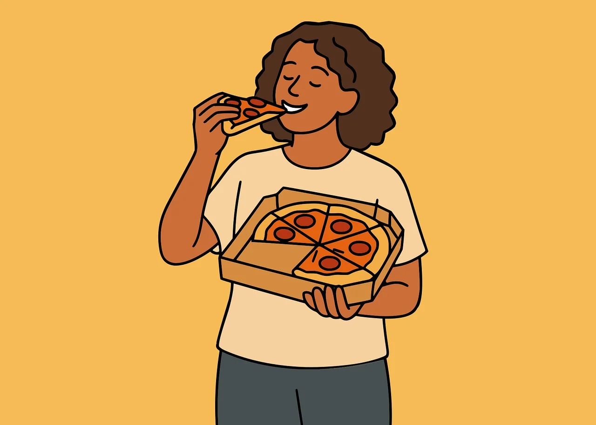

Sometimes (≈ 40%)
El adverbio sometimes se utiliza para hablar de acciones que ocurren en ciertas ocasiones, pero no siempre - a veces.
El adverbio sometimes se utiliza para hablar de acciones que ocurren en ciertas ocasiones, pero no siempre - a veces.
| - I sometimes go to the park on Saturdays. (A veces voy al parque los sábados). |
|
- She sometimes forgets her homework. (Ella a veces olvida su tarea). |
|
- We sometimes eat pizza on Fridays. (Nosotros a veces comemos pizza los viernes). |

De uso gratuito bajo la Licencia de contenido de Pixabay
Completa las frases escribiendo la palabra correcta en los espacios en blanco.
Creative Commons Atribución-NoComercial-CompartirIgual (CC BY-NC-SA)